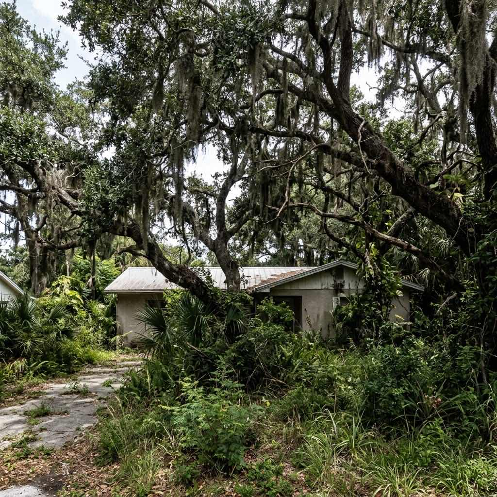

Selective Development Support
Land Clearing for Sarasota Communities and Development
Selective clearing that protects the trees worth saving and removes everything else.
Clear Smart, Not Just Fast
Not every tree on a lot needs to go. The difference between a bulldozer operator and a certified arborist is knowing which trees add value and which ones need to come out.
Arborist Art provides selective land clearing for HOA development phases, overgrown common areas, and new construction sites across Sarasota. Tyler Kaulbars personally evaluates every site, tags the trees worth preserving, and oversees the clearing process to ensure your valuable canopy stays intact while everything else is removed efficiently.
For ongoing tree maintenance after clearing, see our HOA tree management programs.

Land Clearing Services
New Phase Development
Clearing for new community phases, building pads, and infrastructure. We coordinate with your developer and preserve trees that add value to the finished product.
Overgrown Common Areas
Neglected common areas with invasive species, dead trees, and overgrowth. We clear the problem vegetation and restore the area to a maintainable condition.
Selective Tree Preservation
Tyler tags and protects the trees your community wants to keep. Root zones are protected during clearing, and preserved trees are pruned for health after the work is complete.
Debris Hauling and Site Prep
Complete removal of all cleared vegetation, brush, and debris. Sites left clean and ready for the next phase of work.
Preserve What Matters
Arborist-Led Planning
Tyler evaluates every tree on the site before a single cut is made. Your developer gets a clear map of what stays and what goes.
Value Preservation
Mature trees add tens of thousands in property value. Selective clearing protects that investment instead of starting from scratch.
Compliance and Permitting
Many municipalities have tree preservation ordinances. We handle permitting and ensure your clearing project stays compliant.
How It Works
Site Evaluation
Tyler walks the site, identifies every tree, and develops a clearing plan that preserves valuable specimens.
Tagged and Mapped
Trees marked for preservation are tagged and their root zones protected. Your board or developer reviews and approves the plan.
Selective Clearing
Our crew clears the site under certified arborist supervision. Protected trees are monitored throughout the process.
Site Delivery
Clean site with all debris removed, preserved trees pruned and healthy, and documentation delivered to your board or developer.
Land Clearing Questions
Clear the Right Way. Protect What Matters.
Tyler will evaluate your site and build a selective clearing plan. No cost, no obligation.
Request a Land Clearing Assessment
Tell us about the site, size, and any trees you want preserved Tyler will reach out personally.
941-233-3976
Direct arborist access for property managers, boards, and developers.
Tree Preservation
We do not just clear land. We protect your community's most valuable natural assets during construction.